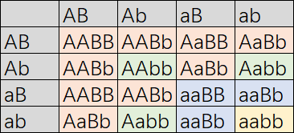

开门见山
.vcf 文件和 .gtf 文件一样，都是依赖于 .fasta 文件所存在的。
.vcf 文件可以将多个样本的变异都记录在一个文件里。
.vcf 文件有三部分组成：元信息行（## 开头）、列标题行（#CHROM 开头） 和 数据表行。数据部分共有 9 个标准固定列，后接 1 个或多个 样本列。
这个是一个标准的 .vcf 文件：
##fileformat=VCFv4.2
##fileDate=20260830
##source=ExampleCallingPipeline
##reference=GRCh38
#CHROM POS ID REF ALT QUAL FILTER INFO FORMAT SAMPLE1 SAMPLE2
chr1 123456 rs6054257 G A 29 PASS DP=14;AF=0.5;AA=G GT:GQ:DP:AD 0/1:35:14:7,7 0/0:40:10:10,0
chr1 123457 . A T,C 60 PASS DP=25;AF=0.4,0.1 GT:GQ:DP:AD 1/2:45:15:0,12,3 0/1:50:10:7,3,0
其中字段含义如下：
- CHROM 变异所在的染色体，对应
- POS 变异所在的碱基位置，不管插入/确实/SNP，都是基于一个碱基作为坐标表示的。
- ID 许多变异数据库中的变异 ID，如果没有，你可以自己去搭建 ID 体系或者写个点。
- REF 参考基因组在 POS 单点碱基坐标的原始碱基。
- ALT 编译后的结果，有多个结果时（例如多个等位基因），用半角逗号分隔。
- QUAL 这个碱基的质量/可信程度，Phred 格式，可用点省略不写。
- FILTER 过滤状态。如果通过了所有的质控阈值，填 PASS；如果未通过，会写明具体的原因。
- INFO 存储这个变异位点的其它信息，用字典结构存储（KEY=VALUE），多个键值对用半角分号隔开。
- FORMAT 后面样本的数据格式，相当于子字段的定义，和样本具体的数据一一对应，详细子字段见下。
- SAMPLE 这就是我说的可以存储多个样本信息的原因，你可以无限延生下去，构建一个超级大的矩阵，这样的巨无霸矩阵我们在一些 GWAS 分析时会用到。
.fasta 文件中染色体名称。
FORMAT 子字段一般有如下：
- GT Genetype，基因型，不同倍型有不同的记录方法，详细见下。
- GQ Genotype Quality，基因型质量值。
- DP Read Depth，该样本的覆盖深度，该特定样本在这个位点支持的 Reads 数量。
- AD Allele Depths，等位基因深度，分别支持 REF 和各个 ALT 碱基的 reads 数量。以逗号隔开，例如 7,7 表示支持 REF 有 7 条，支持 ALT 有 7 条。
不同倍型生物具体记录有一点差异，主要体现在 GT 上：
- 单倍体 单倍体每个基因座只有 1 个 等位基因，因此 GT 字段只有一个数字。0 代表和 REF 一样，无突变；1 代表突变为 ALT 的第一个突变类型；2 代表突变为 ALT 的第二个突变类型，依此类推。
- 二倍体 GT 字段由 2 个数字 组成，中间用 / 或 | 连接。未相位化使用 /，意思是仅知道存在这些等位基因，但不清楚分别来自哪条同源染色体。已相位化使用 |，意思是明确知道各个等位基因在单倍体单倍型上的来源和连锁关系。数字含义同单倍体。
- 多倍体 多倍体和二倍体表达方式类似，只不过是用更多的 / 或 | 分隔。
我不知道我说清楚了没，对于多样本、多等位突变，总之要记住一句话：在 VCF 标准中，同一个基因组位置（CHROM + POS）如果存在多种突变，必须合并在同一个数据行中记录，而不能拆分成多行。
例题与练习题
豌豆的黄绿
豌豆是二倍体，我们考虑颜色性状：黄色/绿色，其中黄色是显性性状，绿色是隐形性状，在高中，我们用 A 来表示黄色基因，a 表示绿色基因。
假设颜色性状在一号染色体的 100 号碱基处，参考基因黄色在 100 号碱基处为 A，绿色为 G，填空以下 VCF 文件：
| CHROM | POS | ID | REF | ALT | QUAL | FILTER | INFO | FORMAT | Sample_AA | Sample_Aa | Sample_aa |
|---|---|---|---|---|---|---|---|---|---|---|---|
| chr01 | 100 | . | A | G | 30 | PASS | DP=14 | GT | ___ | ___ | ___ |
答案是：
| CHROM | POS | ID | REF | ALT | QUAL | FILTER | INFO | FORMAT | Sample_AA | Sample_Aa | Sample_aa |
|---|---|---|---|---|---|---|---|---|---|---|---|
| chr01 | 100 | . | A | G | 30 | PASS | DP=14 | GT | 0/0 | 0/1 | 1/1 |
豌豆的黄绿与圆皱
颜色假设不变，加入新性状，圆皱，圆形为显性，B 表示，皱缩为隐形，b 表示，则有如下情况（9:3:3:1）：

假设圆/皱基因在二号染色体的 100 号氨基酸位置上，突变类型一样，一共有 3 × 3 九种基因型，分别写出它们的 VCF 文件：
| CHROM | POS | ID | REF | ALT | QUAL | FILTER | INFO | FORMAT | AABB | AaBB | aaBB | AABb | AaBb | aaBb | Aabb | AaBb | aabb |
|---|---|---|---|---|---|---|---|---|---|---|---|---|---|---|---|---|---|
| chr01 | 100 | . | A | G | 30 | PASS | DP=14 | GT | ___ | ___ | ___ | ___ | ___ | ___ | ___ | ___ | ___ |
| chr02 | 100 | . | A | G | 30 | PASS | DP=14 | GT | ___ | ___ | ___ | ___ | ___ | ___ | ___ | ___ | ___ |
答案为：
| CHROM | POS | ID | REF | ALT | QUAL | FILTER | INFO | FORMAT | AABB | AaBB | aaBB | AABb | AaBb | aaBb | Aabb | AaBb | aabb |
|---|---|---|---|---|---|---|---|---|---|---|---|---|---|---|---|---|---|
| chr01 | 100 | . | A | G | 30 | PASS | DP=14 | GT | 0/0 | 0/1 | 1/1 | 0/0 | 0/1 | 1/1 | 0/0 | 0/1 | 1/1 |
| chr02 | 100 | . | A | G | 30 | PASS | DP=14 | GT | 0/0 | 0/0 | 0/0 | 0/1 | 0/1 | 0/1 | 1/1 | 1/1 | 1/1 |
多等位基因
假设某二倍体植物在 1 号染色体 100 号位置上参考基因位点为 A，共有两种变异，分别是 T/G，分别记为 $A_1$、$A_2$、$A_3$，填空以下信息：
| CHROM | POS | ID | REF | ALT | QUAL | FILTER | INFO | FORMAT | A1A1 | A1A2 | A1A3 | A2A2 | A2A3 | A3A3 |
|---|---|---|---|---|---|---|---|---|---|---|---|---|---|---|
| chr01 | 100 | . | A | G | 30 | PASS | DP=14 | GT | ___ | ___ | ___ | ___ | ___ | ___ |
答案为：
| CHROM | POS | ID | REF | ALT | QUAL | FILTER | INFO | FORMAT | A1A1 | A1A2 | A1A3 | A2A2 | A2A3 | A3A3 |
|---|---|---|---|---|---|---|---|---|---|---|---|---|---|---|
| chr01 | 100 | . | A | T,G | 30 | PASS | DP=14 | GT | 0/0 | 0/1 | 0/2 | 1/1 | 1/2 | 2/2 |